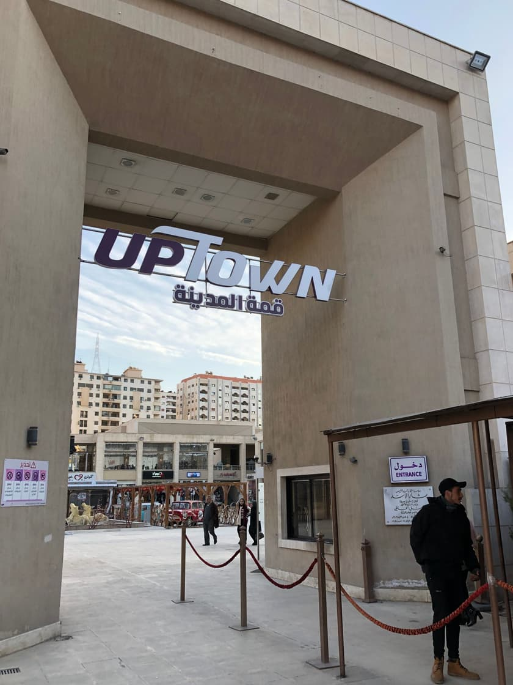

دُمَّر
ضاحية غرب دمشق تشتهر بالمساحات الخضراء والطبيعة الجبلية الخلابة.

دمشق مدينة التاريخ والحضارة، ونعمل اليوم على بنائها من جديد بسواعد أبنائها، لتبقى منارةً للعلم والثقافة والعمران.
نعمل معاً من أجل بناء مدينة مزدهرة وآمنة، تضع المواطن في قلب التنمية، وتستند إلى الشفافية والكفاءة والابتكار.
تابع أحدث الأخبار والتعاميم والقرارات الصادرة عن محافظة دمشق
من خدمات الكترونية, وطلبات واستعلامات
كلها متاحة بسهولة وسرعة.
لأنو صوتك يهمنا ... صوت العاصمة